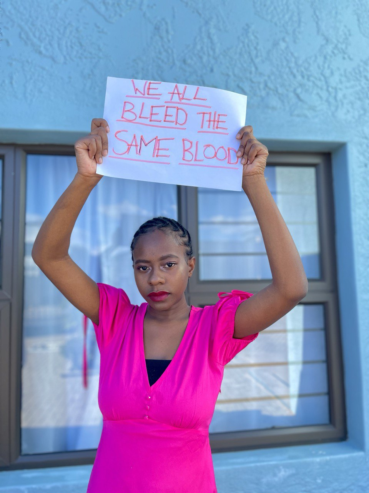

Menstrual Hygiene
is a Right,
Not a Privilege!!
“I just want women to hear me loud and clear…
you are not dirty, you’re not unclean.
Your body is doing things that it can’t control
and you need to see someone who knows what they’re doing.”
-Dr. Lauren Streicher,
Professor of Obstetrics
& Gynecology at Northwestern Medicine
Learn more
